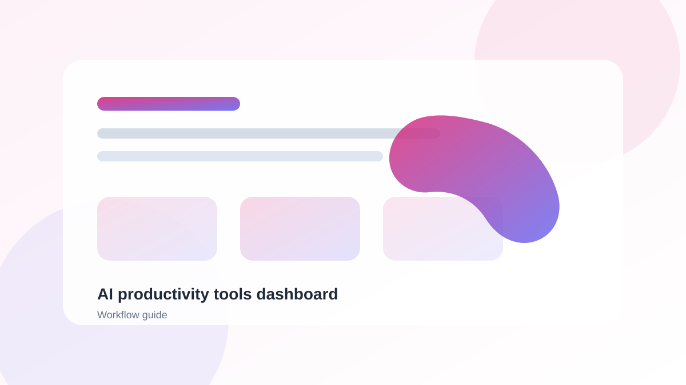

Introduction
As we enter 2026, AI tools have become essential for anyone looking to boost productivity and efficiency. The right AI tools can automate repetitive tasks, streamline workflows, and help you focus on what matters most. In this guide, we'll explore the best AI productivity tools available this year.
How AI Boosts Productivity
AI productivity tools work by automating repetitive tasks, providing intelligent suggestions, and helping you make better decisions faster. Here are the key ways AI can help:
- Task Automation: Automate routine tasks like email management, scheduling, and data entry
- Smart Suggestions: Get intelligent recommendations based on your habits and preferences
- Time Optimization: Optimize your schedule and reduce time wasted on unproductive activities
- Knowledge Management: Organize and retrieve information more efficiently
Quick Tip
Start with one tool that solves your biggest pain point. Once you're comfortable, gradually add more tools to create a seamless workflow.
Top AI Productivity Tools
1. Notion AI
Notion AI is a powerful all-in-one workspace that combines note-taking, task management, and AI assistance. Its AI features can help you write, summarize, and organize content automatically. With Notion AI, you can:
- Generate meeting notes and action items
- Summarize long documents
- Create to-do lists from natural language
- Translate content into multiple languages
2. ClickUp AI
ClickUp AI brings intelligent automation to task management. It can create tasks from natural language, suggest priorities, and even predict project timelines. Key features include:
- AI-powered task creation and prioritization
- Smart due date suggestions
- Automated status updates
- Project progress predictions
3. Reclaim AI
Reclaim AI optimizes your calendar by automatically scheduling tasks, protecting focus time, and finding optimal meeting times. It's like having a personal assistant for your calendar:
- Intelligent time blocking
- Focus time protection
- Automatic meeting scheduling
- Deadline-driven task scheduling
4. Zapier AI
Zapier AI lets you create automated workflows between your favorite apps using natural language prompts. No coding required!
- Natural language workflow creation
- AI-powered zap suggestions
- Multi-step automation
- Thousands of app integrations
5. Otter.ai
Otter.ai provides real-time transcription and summarization for meetings, interviews, and lectures. It's perfect for anyone who spends a lot of time in meetings:
- Real-time transcription
- AI-powered summarization
- Keyword highlighting
- Integration with Zoom, Google Meet, and Teams
Advertisement Space
Tool Comparison
| Tool | Best For | Price | Key Feature |
|---|---|---|---|
| Notion AI | Note-taking & organization | Free + paid tiers | AI writing assistance |
| ClickUp AI | Task management | Free + paid tiers | Smart task prioritization |
| Reclaim AI | Calendar optimization | Paid | Intelligent time blocking |
| Zapier AI | Workflow automation | Free + paid tiers | Natural language zaps |
| Otter.ai | Meeting transcription | Free + paid tiers | Real-time transcription |
Example Productivity Workflow
Here's how you can combine these tools for maximum efficiency:
- Morning: Use Reclaim AI to review your optimized schedule
- Meetings: Record and transcribe with Otter.ai
- Notes: Organize meeting notes in Notion with AI summarization
- Tasks: Create action items in ClickUp from meeting notes
- Automation: Use Zapier to auto-send follow-up emails when tasks are completed
Advertisement Space
Frequently Asked Questions
What's the best AI productivity tool for beginners?
Notion AI is a great starting point due to its intuitive interface and wide range of features. It's also free for basic use.
Are these tools expensive?
Most tools offer free tiers or trials, and pricing varies based on features. Many are quite affordable for individual users, with plans starting around $10-$20 per month.
Can these tools replace human workers?
No, these tools are designed to augment human productivity, not replace it. They handle repetitive tasks so you can focus on creative and strategic work that requires human judgment.
How do I choose which tools to use?
Start by identifying your biggest productivity pain point, whether it's email overload, disorganized notes, or inefficient meetings, and choose a tool that solves that specific problem.
Conclusion
AI productivity tools are transforming how we work. By choosing the right tools for your needs, you can significantly boost your efficiency and achieve more in less time. Remember, it's not about using as many tools as possible; it's about finding the right tools that fit your workflow and help you work smarter, not harder.